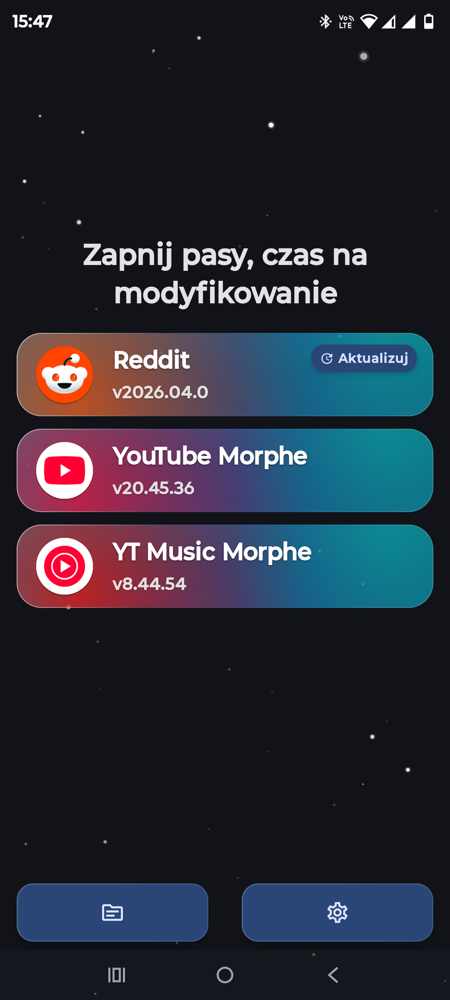
MorpheApp
Morphe to zaawansowane, otwartoźródłowe narzędzie służące do modyfikowania (patchowania) aplikacji na system Android. Pozwala ono na omijanie ograniczeń (np. blokowanie reklam), odblokowywanie funkcji premium takich jak odtwarzanie w tle, oraz głęboką personalizację wyglądu i zachowania popularnych aplikacji (m.in. YouTube, YouTube Music czy Reddit). Projekt rozwija się z pomocą społeczności i bazuje na wcześniejszych dokonaniach znanych z projektu ReVanced.
Zobacz na GitHub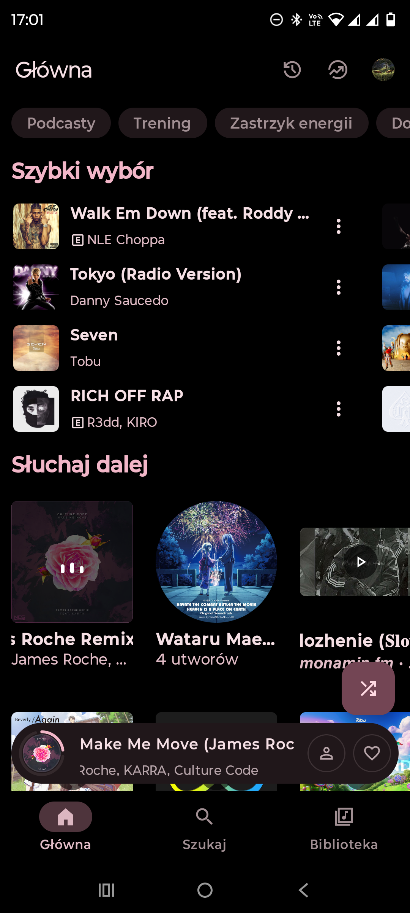
Metrolist
Metrolist to lekki i nowoczesny klient YouTube Music na system Android. Aplikacja pozwala na korzystanie z funkcji Premium całkowicie za darmo – oferuje odtwarzanie muzyki w tle, brak irytujących reklam oraz dostęp do pełnej biblioteki utworów i teledysków. To idealne rozwiązanie mobilne dla osób szukających minimalistycznego i wydajnego sposobu na słuchanie ulubionej muzyki bez zbędnych ograniczeń i dodatkowych kosztów.
Zobacz na GitHub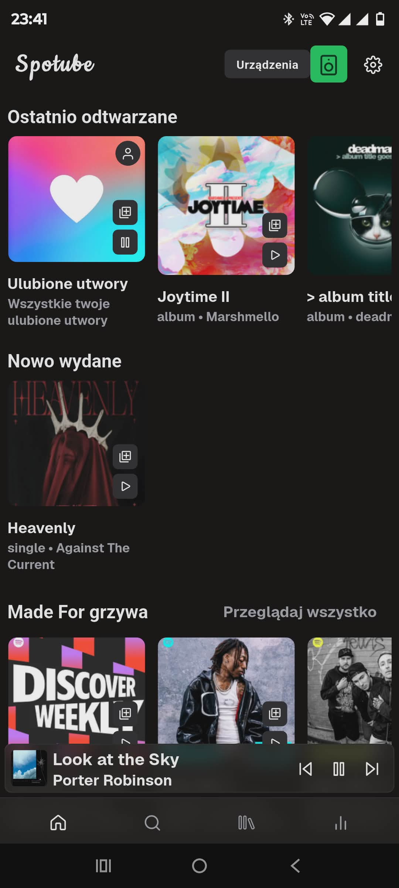
Spotube
Spotube to darmowy, otwartoźródłowy klient Spotify, który działa na wielu platformach. Nie wymaga subskrypcji Premium do odtwarzania muzyki. W innowacyjny sposób łączy on znajomy i bogaty interfejs Spotify z darmowym strumieniowaniem dźwięku pobieranym bezpośrednio z zewnętrznych źródeł, takich jak YouTube czy Piped. Aplikacja jest niezwykle lekka, szanuje prywatność (brak telemetrii) i pozwala cieszyć się ulubionymi utworami bez przerywników reklamowych.
Zobacz na GitHub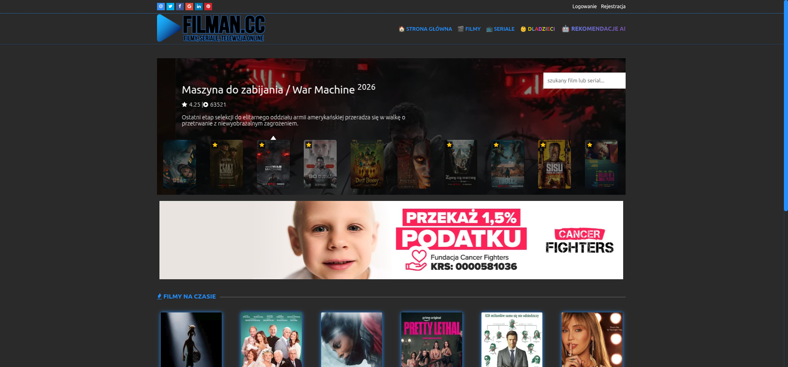
Filman
Filman to popularny polski serwis internetowy oferujący dostęp do ogromnej bazy filmów i seriali online. Znajdziesz tu zarówno najnowsze premiery kinowe, jak i starsze klasyki dostępne z polskim lektorem, dubbingiem lub napisami. Platforma działa jako wygodny agregator, gromadząc linki do zewnętrznych odtwarzaczy, co znacznie ułatwia wyszukiwanie i darmowe oglądanie ulubionych produkcji w jednym miejscu.
Przejdź do Filman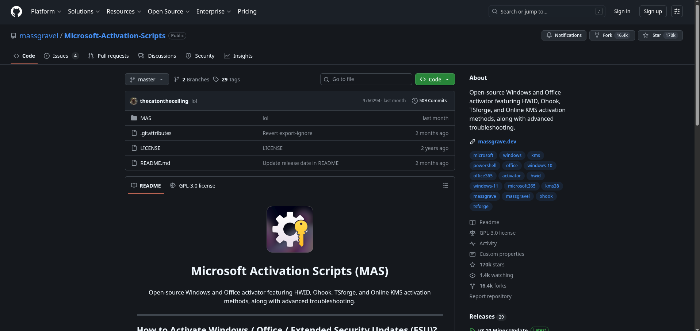
MAS (Activation Scripts)
Microsoft Activation Scripts (MAS) to powszechnie używane, otwartoźródłowe narzędzie służące do aktywacji systemów operacyjnych Windows oraz pakietów biurowych Microsoft Office. Skrypt ten oferuje między innymi w pełni darmową aktywację Office 365, działa bezpośrednio z poziomu wiersza poleceń i obsługuje popularne metody aktywacji takie jak HWID, Ohook czy KMS38. Cieszy się ogromnym zaufaniem społeczności IT ze względu na całkowicie jawny i przejrzysty kod, wolny od złośliwego oprogramowania często spotykanego w podobnych programach.
Zobacz na GitHub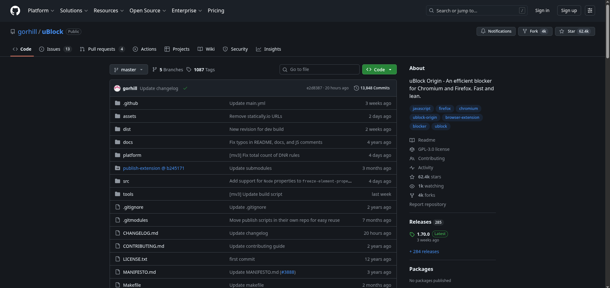
uBlock Origin
uBlock Origin to wydajne, otwartoźródłowe rozszerzenie do przeglądarek internetowych, służące do blokowania uciążliwych reklam, skryptów śledzących oraz złośliwego oprogramowania. Wyróżnia się na tle konkurencji niezwykle niskim zużyciem pamięci i procesora, dzięki czemu nie spowalnia działania przeglądarki. Oferuje ogromne możliwości konfiguracji, pozwalając na jednoczesne korzystanie z wielu zaawansowanych list filtrów chroniących Twoją prywatność.
Zobacz na GitHub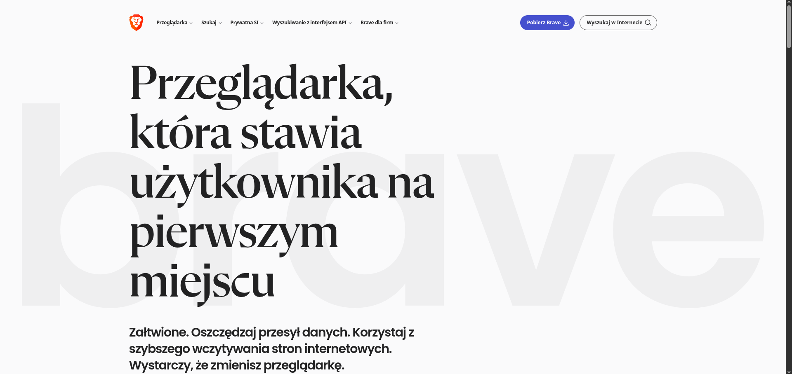
 Brave Browser
Brave Browser
Brave to szybka, prywatna i bezpieczna przeglądarka internetowa oparta na silniku Chromium. Wyróżnia się wbudowanym, niezwykle skutecznym mechanizmem ochronnym (Brave Shields), który domyślnie i bez konieczności dodatkowej konfiguracji blokuje irytujące reklamy, skrypty śledzące oraz złośliwe oprogramowanie. Dzięki pozbyciu się zbędnych elementów ładuje strony nawet trzykrotnie szybciej, pozwalając jednocześnie na oszczędność transferu danych i baterii.
Pobierz Brave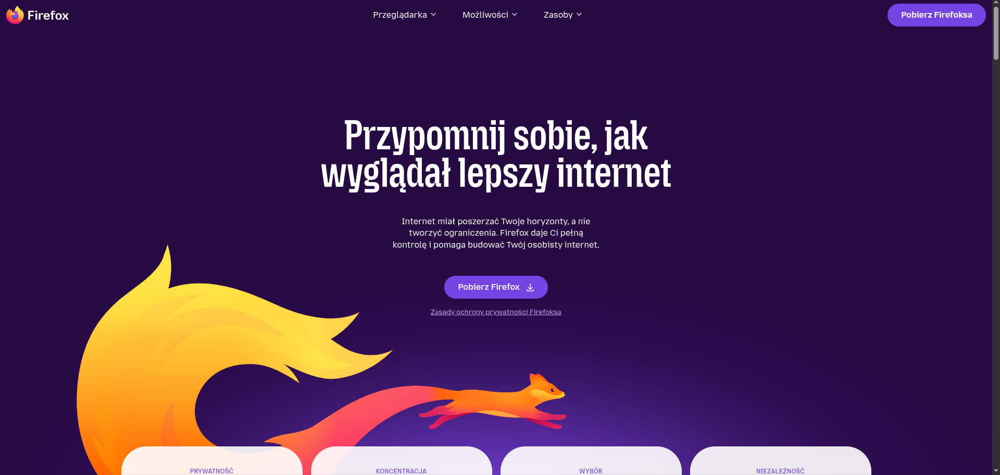
Mozilla Firefox
Firefox to niezwykle popularna, w pełni niezależna i otwartoźródłowa przeglądarka internetowa rozwijana przez fundację Mozilla. W przeciwieństwie do większości dzisiejszych przeglądarek, nie opiera się na silniku Chromium, co pomaga utrzymać otwartą i wolną sieć. Kładzie ogromny nacisk na prywatność użytkowników, oferując domyślną, wzmocnioną ochronę przed śledzeniem (Enhanced Tracking Protection).
Pobierz Firefox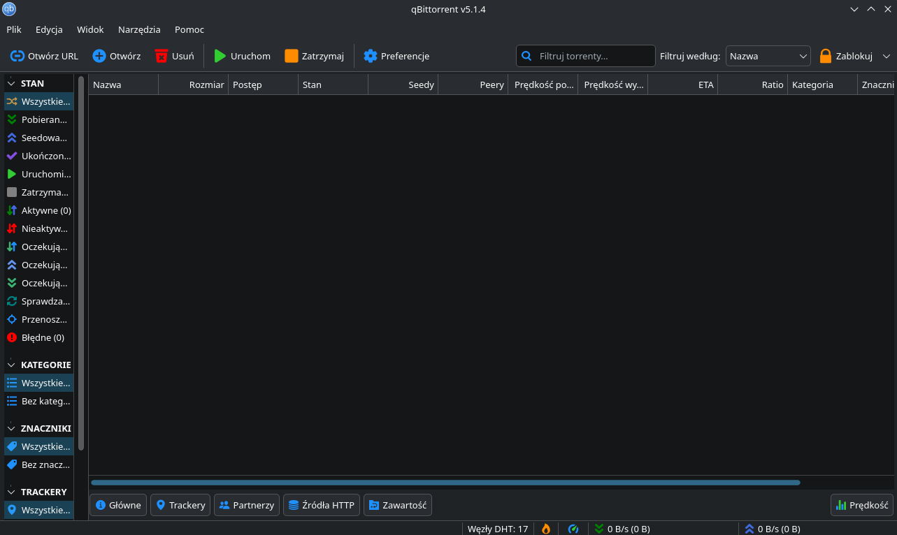
 qBittorrent
qBittorrent
qBittorrent to darmowy, otwartoźródłowy klient sieci BitTorrent, będący doskonałą i lekką alternatywą dla popularnych programów takich jak uTorrent czy BitTorrent. Pozbawiony jest irytujących reklam i niechcianego oprogramowania dodatkowego. Oferuje zaawansowane funkcje, takie jak zintegrowana wyszukiwarka torrentów oraz pełne wsparcie dla szyfrowania połączeń.
Zobacz na GitHub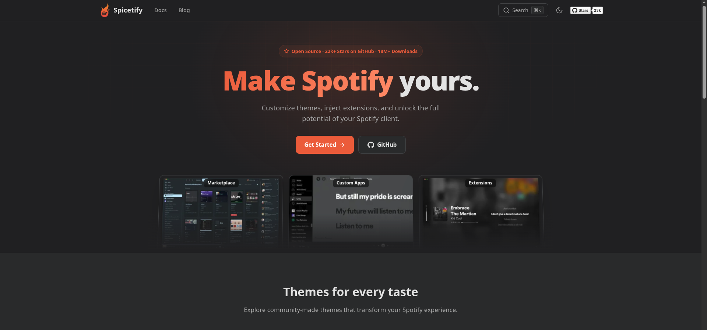
Spicetify
Spicetify to wieloplatformowe narzędzie działające z poziomu wiersza poleceń, które pozwala na głęboką personalizację oficjalnego klienta Spotify. Dzięki niemu możesz całkowicie odmienić wygląd aplikacji za pomocą niestandardowych motywów, a także rozszerzyć jej funkcjonalność używając potężnych wtyczek i dodatków (np. blokowanie reklam).
Przejdź do Spicetify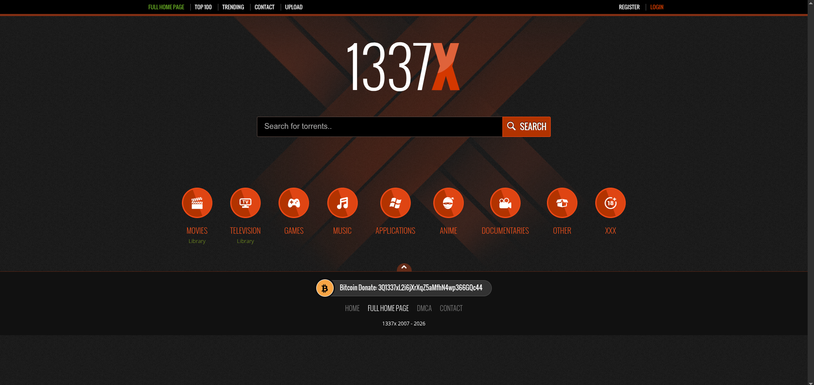
1337x
1337x to jeden z najpopularniejszych katalogów i wyszukiwarek plików torrent w internecie. Oferuje ogromną bazę linków magnet i plików torrent z najróżniejszych kategorii. Serwis wyróżnia się aktywną społecznością, przejrzystym interfejsem oraz systemem weryfikacji przesyłających (uploaderów), co znacząco pomaga unikać złośliwego oprogramowania.
Przejdź do 1337x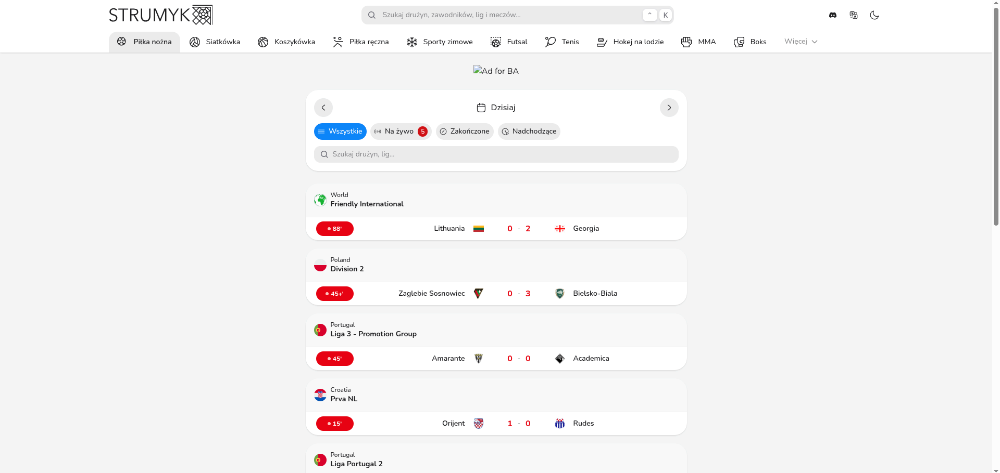
Strumyk
Strumyk to bardzo popularny polski serwis oferujący darmowy dostęp do transmisji sportowych na żywo. Znajdziesz tam streamy z najważniejszych wydarzeń ze świata piłki nożnej, gal sportów walki, Formuły 1 i wielu innych dyscyplin. Jest to główne miejsce w polskim internecie dla kibiców chcących śledzić sportowe zmagania w czasie rzeczywistym.
Przejdź do Strumyk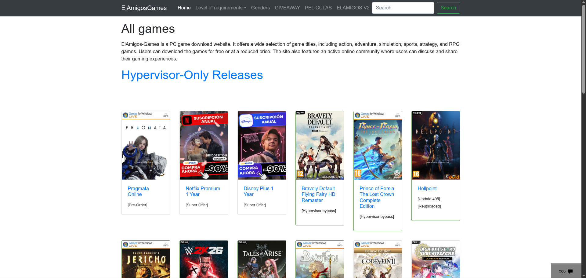
ElAmigos
ElAmigos to jedna z najbardziej znanych i cenionych grup w świecie tzw. "repacków" gier komputerowych. Ich wstawki charakteryzują się wyjątkowo prostym procesem instalacji oraz wbudowanymi, najnowszymi aktualizacjami i wszystkimi dodatkami (DLC). Serwis oferuje potężną bibliotekę tytułów zoptymalizowanych pod kątem rozmiaru pobieranych plików.
Przejdź do ElAmigos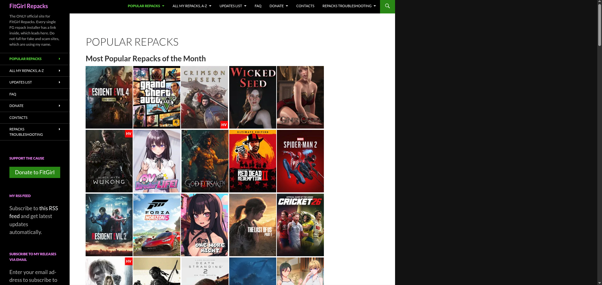
FitGirl Repacks
FitGirl to absolutna legenda w świecie "repacków" gier komputerowych. Strona słynie z niesamowicie mocnej kompresji, która pozwala drastycznie zmniejszyć rozmiar pobieranych plików, co jest idealnym rozwiązaniem dla osób z wolniejszym łączem internetowym. Wstawki FitGirl są powszechnie uznawane za niezwykle bezpieczne, stabilne i wolne od wirusów.
Przejdź do FitGirl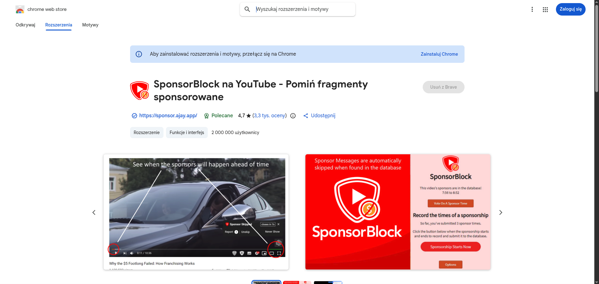
SponsorBlock
SponsorBlock to innowacyjne, otwartoźródłowe rozszerzenie przeglądarkowe, które pozwala automatycznie pomijać irytujące segmenty sponsorowane w filmach na platformie YouTube. Dzięki bazie danych tworzonej przez tysiące użytkowników, narzędzie potrafi wykryć i pominąć nie tylko reklamy twórców, ale również wstępy i przypomnienia o subskrypcji.
Zobacz na GitHub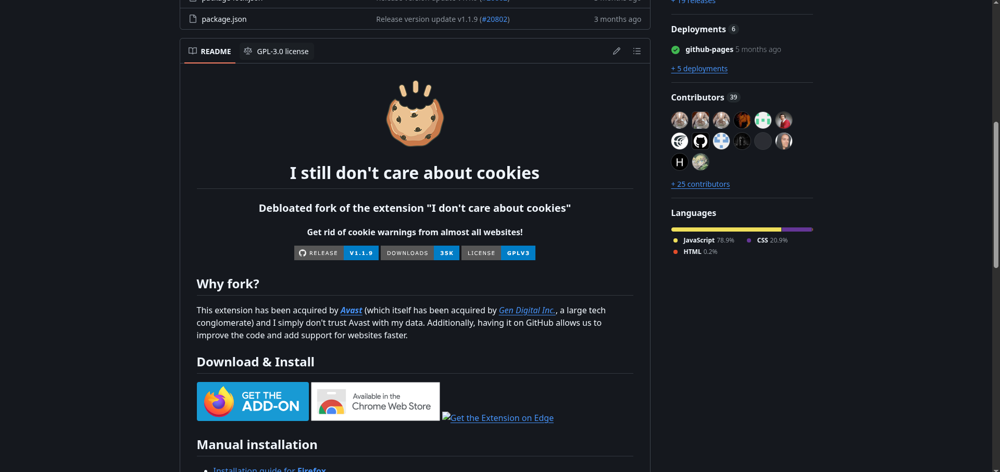
I Still Don't Care About Cookies
I Still Don't Care About Cookies to otwartoźródłowe rozszerzenie przeglądarkowe, które raz na zawsze rozwiązuje problem uciążliwych komunikatów o plikach cookies. Narzędzie automatycznie ukrywa okienka wyboru i akceptuje lub odrzuca zgody, pozwalając na natychmiastowy dostęp do treści strony bez zbędnych kliknięć.
Zobacz na GitHub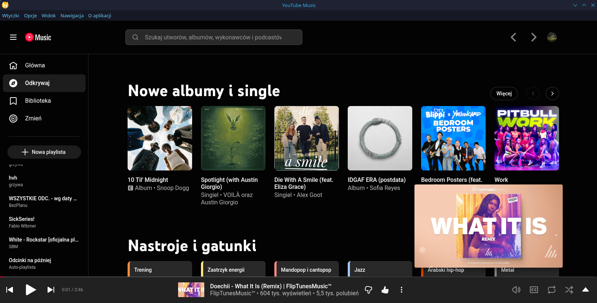
Pear
Pear to świetna, oparta na środowisku Electron aplikacja desktopowa. Zachowuje ona natywny interfejs YouTube Music, a jednocześnie pozwala na słuchanie muzyki całkowicie bez reklam i logowania. Wyróżnia się na tle przeglądarkowej wersji ogromnymi możliwościami rozbudowy dzięki wbudowanemu wsparciu dla wtyczek, własnym motywom wizualnym oraz przydatnym narzędziom, takim jak system pobierania utworów.
Zobacz na GitHubNasi Partnerzy
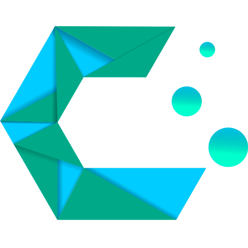
CachyOS